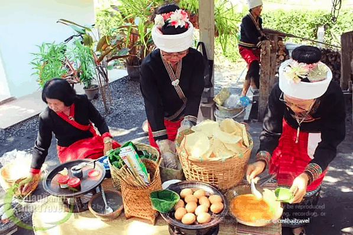
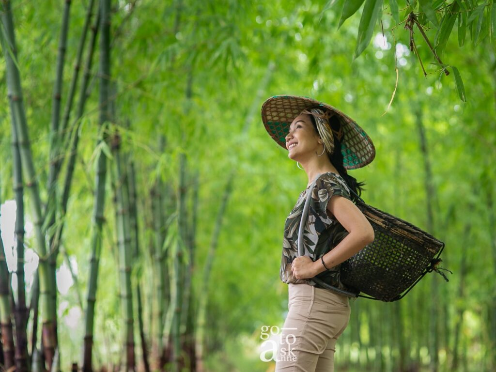
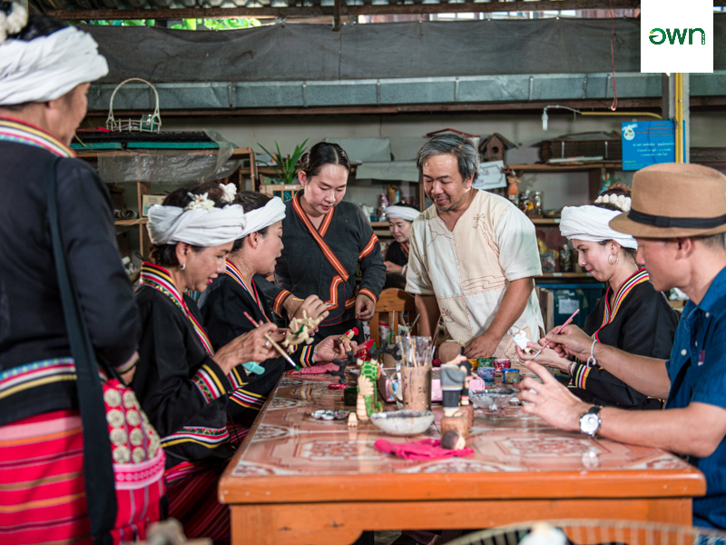
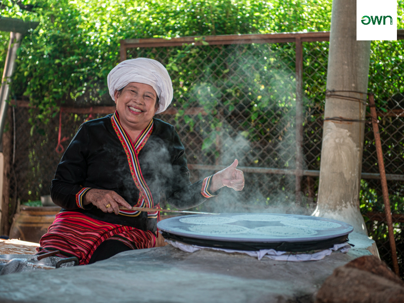
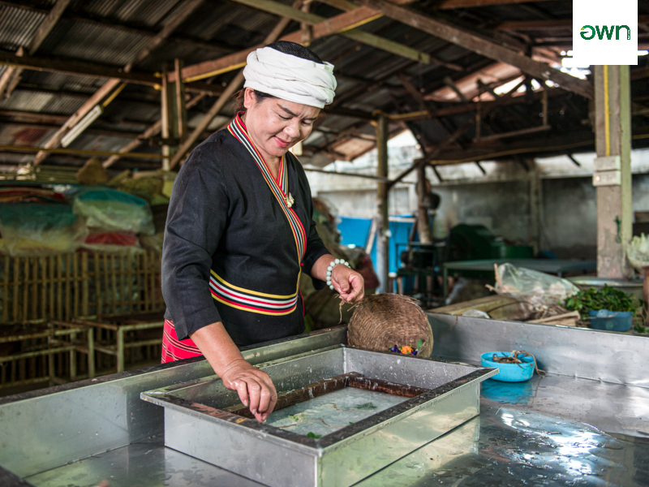
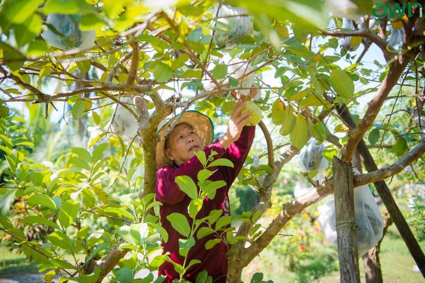

|  |
2.ศูนย์การเรียนรู้ภูมิปัญญาไตลื้อบ้านใบบุญ
ศูนย์การเรียนรู้ภูมิปัญญาไทยไตลื้อบ้านใบบุญ จัดตั้งขึ้นเพื่อเชิดชู และยกย่องบุพการีผู้ให้ทั้งชีวิต และจิตวิญญาณ ตลอดจนที่อยู่อาศัยในปัจจุบัน รวมถึงเผยแพร่และแบ่งปันความรู้ ประสบการณ์ของลูกหลาน ญาติมิตร และเพื่อนบ้านใกล้เคียงของบ้านใบบุญที่สั่งสมบ่มเพาะมาจากบรรพชน ด้วยการสืบเสาะแสวงหาจนนำมาประยุกต์สร้างสรรค์ รวมถึงแหล่งเรียนรู้อีกแห่งหนึ่งของบ้านไตลื้อ หมู่ 4 ตำบลลวงเหนือ ที่เน้นความเป็นชาติพันธุ์ไตลื้อในล้านนาไทย
|
3.ทุ่งนาไตใต้ฟ้าเมืองลวง
สวนทุ่งนาไต ใต้ฟ้าเมืองลวง เกิดขึ้นจากเจ้าของสวนออกมาตามหาความสุขแล้วก็มาพบเจอความสุขของตัวเองที่ลวงเหนือ สิ่งที่เราเห็นวันนี้ คือความสุขของแกที่งอกงามอย่างงดงามบนผืนดินเนื้อที่ 12 ไร่ ที่แกภูมิใจ ทั้งสวนไผ่ที่ให้หน่อไม้หวานๆ สวนลำไย สวนผัก และโรงเลี้ยงเป็ดกากีแคมเบล เป็ดพันธุ์ไข่ที่ให้ไข่เป็ดขนาดใหญ่ไข่แดง แดงสวย ที่นี่เราเก็บไข่เป็ดมาต้ม เจียวไข่เป็ด กินกับส้าหัวปลีที่เก็บในสวน โดยเกิร์ลแก๊งชาวไตลื้อ ทุกอย่างสดมาก อร่อยมาก |
 |
|  |
4.ตุ๊กตาไม้นายโถ
เป็นการแกะสลักเนื้อไม้ให้กลายเป็นตุ๊กตาแสนน่ารัก ของดีของชุมชน ระดับ OTOP 5 ดาว ลงสีสันสวยงามตามความชอบ
|
5.เฮือนข้าวแคบป้าผัน
แสดงวิธีการทำข้าวแคบ ซึ่งจะนิยมทำข้าวแคบทานกันในช่วงฤดูหนาว จะใช้ข้าวสารแช่น้ำ 1 คืน นำมาโม่จนละเอียดเหลวเป็นน้ำแป้ง ผสม น้ำ เกลือและงาดำ |
 |
|  |
6.เฮือนปอกระดาษสา
ศูนย์ผลิตกระดาษสาประจำชุมชนนักท่องเที่ยวสามารถออกแบบลวดลายตามจินตนาการของตน
|
7.บ้านสวนพอเพียงทรัพย์ทองศรี
บ้านสวนที่เน้นวิถีความพอเพียงของคนไตลื้อ มีกิจกรรมทางการเกษตร และการเลี้ยงไก่ ที่รอให้นักท่องเที่ยวลองไปสัมผัสวิถีพื้นบ้าน |
 |